Newton’s Method
牛顿法
- 前提条件
- 一阶导和二阶导连续
- 具有严格正定的Hessian矩阵
- 原理
- 对函数进行二阶泰勒展开
- $$f(x)\approx f(x_{k})+\triangledown f(x_{k})^{T}(x-x_{k})+\frac{1}{2}(x-x_{k})^{T}\triangledown ^{2}f(x_{k})(x-x_{k})$$
- 导数为0时得到极值点
- $$\triangledown f(x)=\triangledown ^{2} f(x_{k})(x-x_{k})+\triangledown f(x_{k})=0$$
- $$x=x_{k}-\left [ \triangledown ^{2}f(x_{k}) \right ]^{-1}\triangledown f(x_{k})$$
- 更新公式
- $$x_{k+1}=x_{k}-\left [ \triangledown ^{2}f(x_{k}) \right ]^{-1}\triangledown f(x_{k})$$
- 减号后面的内容就是牛顿步长（Newton step），这里需要满足Hessian严格正定\(\triangledown^{2} f(x_{k})>0\)，因为沿着梯度的负方向才可以保证函数值下降，牛顿步长是一个负号乘Hessian的逆再乘梯度，Hessian的逆必须要和梯度是同向的（正定）才行，从而Hessian也必须是正定的
- 特别的，如果目标函数本身就是二次的，那一步就可以迭代到最优解
- 对函数进行二阶泰勒展开
- 与梯度下降法对比
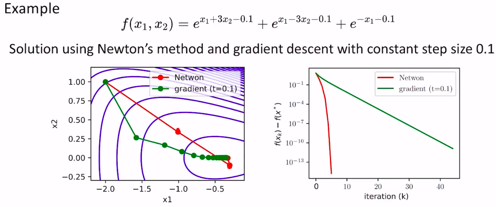
- 下降路线更加平直
- 迭代次数更少
- 每次迭代计算量更大
- 缺点
- 很多时候Hessian矩阵是半正定或者不定的，会导更新方向不是梯度的反方向，函数值增大
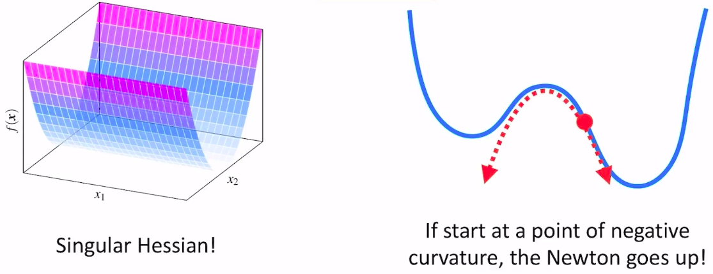
Damped Newton’s Method
阻尼牛顿法
- 当初始点距离最优解较远时，Hessian不一定正定，迭代不一定收敛，因此引入步长因子\(t\)
- $$d=-H^{-1}g$$
- $$x_{k+1}=x_{k}+td_{k}$$
Modified Newton’s Method
修正牛顿法
- 背景
- 提高牛顿方法在一般函数上的鲁棒性
- 对牛顿法的优化思路
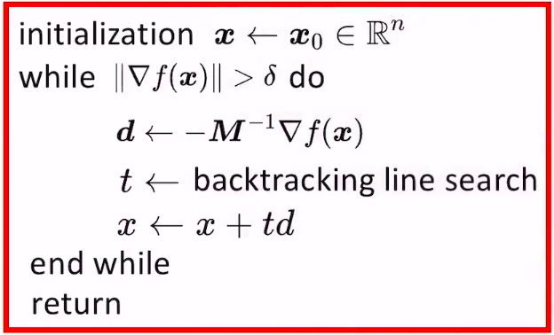
- 考虑到Hessian不一定正定，尝试用一个正定的\(M\)拟合Hessian，只要拟合的够接近，也可以近似表示曲率信息
- 其实没必要求\(M^{-1}\)，本质上我们是想求线性方程\(Md=-\triangledown f(x)\)的解\(d\)，可以用一些成熟的线性求解器进行求解，比解逆快很多
- inexact line search不需要求Hessian，梯度也只是在最开始算一次，更新\(t\)的过程中不需要计算梯度，所以计算量很小
- 原问题
- $$\left [ \triangledown ^{2}f(x) \right ]d=-\triangledown f(x)$$
- 用\(M\)拟合Hessian
- 如果是凸函数（Hessian半正定）
- $$M=\triangledown ^{2}f(x)+\epsilon I,\epsilon =min(1,\left\| \triangledown f(x) \right\|_{\infty })/10$$
- \(M\)严格正定，搜索方向的求解可以用Cholesky factorization快速求解
- \(Md=-\triangledown f(x),M=LL^{T}\)，\(L\)是个下三角矩阵
- 如果是非凸函数（Hessian不定）
- 将Hessian进行Bunch-Kaufman Factorization，原问题转化为\(LBL^{T}d=-\triangledown f(x)\)
- 其中，\(L\)是个下三角矩阵，\(B\)是个对角线由\(1\times 1\)和\(2\times 2\)的矩阵块组成的块对角阵
- \(1\times 1\)的标量一定是正数，\(2\times 2\)的矩阵块的特征值是一正一负，我们需要把每个\(2\times 2\)矩阵替换为和其最接近的\(2\times 2\)正定矩阵，最终得到新的\(\tilde{B}\)（正定），把\(d\)求解出来
- 上面\(2\times 2\)矩阵的正定化就是把负的特征值都算出来，然后用一个\(\epsilon \)去代替负特征值得到新的矩阵
- 如果是凸函数（Hessian半正定）
- 缺点
- 仅仅保证了Hessian的正定，还是要把Hessian求出来，计算量大
Quasi Newton’s Method
拟牛顿法
- 牛顿法的问题
- 牛顿法需要函数在任何点的Hessian可逆且正定，条件比较苛刻
- 牛顿法的计算量太大
- 当\(x\)距离函数的最优解还比较远的时候，用二次函数进行近似的效果不好，这时候用牛顿法不仅计算量大，收敛还很慢；当\(x\)距离函数的最优解比较近的时候，二次函数的近似会好一些，收敛会很快。
- Hessian拟合的函数的条件数可能会变得很大（poorly conditioned）。比如函数是一段直线和一段二次曲线拼接起来的，在直线部分计算Hessian去确定更新步长的话，会得到一个非常大的更新步长（曲率是0，对0取逆是无穷大）
- 拟牛顿法需要满足的一些特质
- 原理和修正阻尼牛顿法一样，设计一个\(M\)去近似\(H\)
- 收敛速度应该在牛顿法和最速梯度下降法之间
- 不需要计算完整的Hessian矩阵（低计算量）
- 线性方程\(Md=-\triangledown f(x)\)存在闭式解
- \(M\)不应该是一个稠密的阵，只需要在重要的的方向上对\(H\)做近似，尽可能稀疏
- \(d\)一定得让函数下降（和梯度方向的夹角小于90度），其实就是\(M\)必须正定
- \(d\)应该包含曲率信息（收敛要比梯度下降来的快），也就是满足\(\Delta g\approx M^{k+1}\Delta x\)
- 拟牛顿法的核心思路
- 通过采样N对\(\Delta x\)和\(\Delta g\)来估计\(\Delta M\)
- 同时，考虑到最终是要求\(M^{-1}\)，干脆直接估计\(B=M^{-1}\)，更新方向\(\Delta x=B\Delta g \)
- 估计\(B\)的时候避免计算Hessian矩阵
凸且光滑函数的BFGS方法
- 假设我们有了很多的\(\Delta x\)和\(\Delta g\)，怎么估计B呢？还是用优化迭代的思路：
- 初始化\(B^{0}\)为单位阵
- 迭代求解最优的\(B\)，迭代的思路如下：
- 我们希望迭代前后B的差距尽可能小：\(min_{B^{k+1}}\left| B^{k+1}-B^{k} \right|^{2}\)
- 其次，\(B\)需要满足一些约束：
- \(B=B^{T}\)，这是因为Hessian是对称阵，所以Hessian的逆也应该对称
- \(\Delta x=B\Delta g \)
- 注意，单纯用差的二范数描述\(B^{k}\)和\(B^{k+1}\)的变化并不好，比如\(\begin{bmatrix} 100 & 1 \\ 1 & 100 \end{bmatrix}\)和\(\begin{bmatrix} 100 & 0.5 \\ 0.5 & 100 \end{bmatrix}\)的差值的二范数很小，但对于右上和左下角的元素来说变化和其自身的大小相比是巨大的，因此需要进行归一化
- 归一化后，优化目标变成：\(min_{B^{k+1}}\left| H^{\frac{1}{2}}(B^{k+1}-B^{k})H^{\frac{1}{2}} \right|^{2}\)，\(B=H\)为真实的Hessian矩阵，\(H=\int_{0}^{1}\triangledown^{2}f\left[(1-\tau)x^{k}+\tau x^{k+1}\right]d\tau\)
- 我们本来就是套估计H，现在这里还要用到H，看起来是个鸡生蛋，蛋生鸡的问题，但实际上这个问题是有解析解的，与\(H\)无关。四个优化领域的大佬提出了BFGS方法，最终得到的更新公式如下：
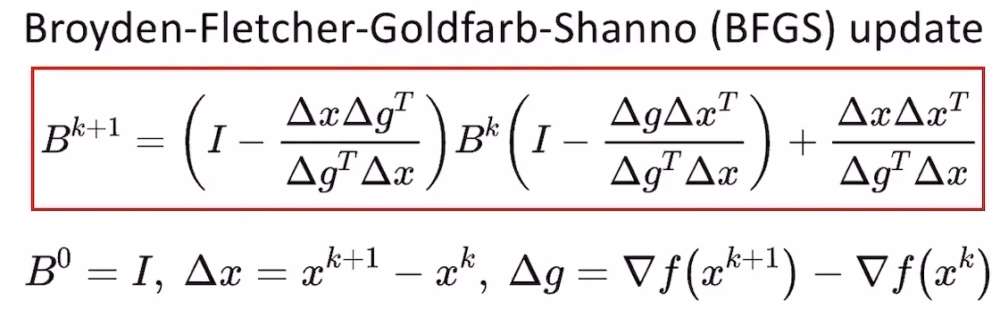
- 注意：当\(\Delta g^{T}\Delta x>0\)时，我们可以保证BFGS更新的结果是正定的，从而保证\(\Delta x\)的方向是函数值下降的方向，对凸函数而言，这是绝对成立的（可以回顾强凸性的定义）；非凸函数后面讨论
- 适用于凸且光滑函数的BFGS方法的流程
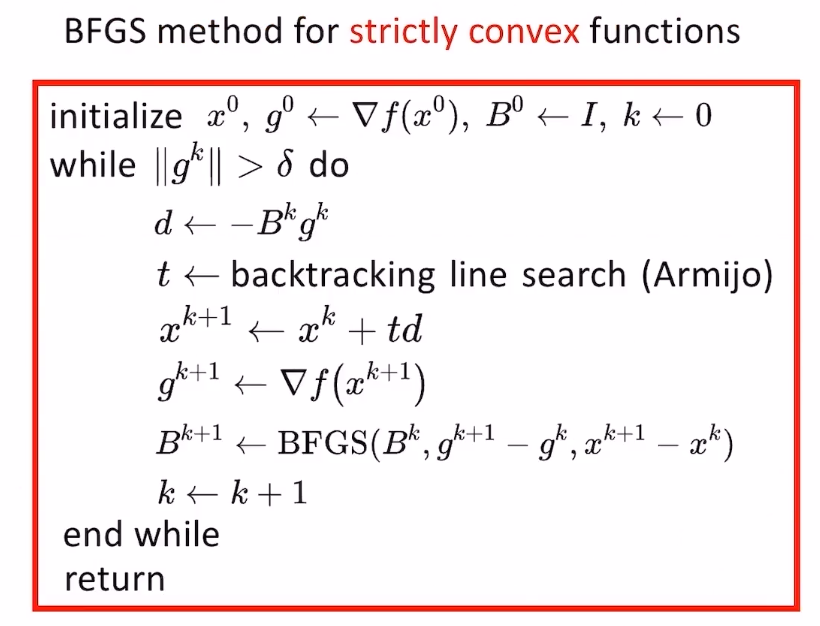
- \(g\)是梯度
- \(d\)是更新方向
- \(t\)是line search方法确定的步长
- 缺点与问题
- 严格梯度单调性（严格凸函数）的条件过于苛刻，一般函数很难满足
- 曲率的计算在optimum附近有效，在远处反而是浪费算力
- 每次迭代的计算复杂度是优化变量的维度的平方，还是不够轻量
- 在非凸函数上是否能够保证收敛仍未知
- 在非光滑函数上能否正常使用仍未知
非凸但光滑函数的BFGS方法
- 在非凸函数上如何保证\(\Delta g^{T}\Delta x>0\)，从而保证更新方向是函数值的下降方向呢？答案是线搜索的时候满足Wolfe conditions
- weak wolfe conditions
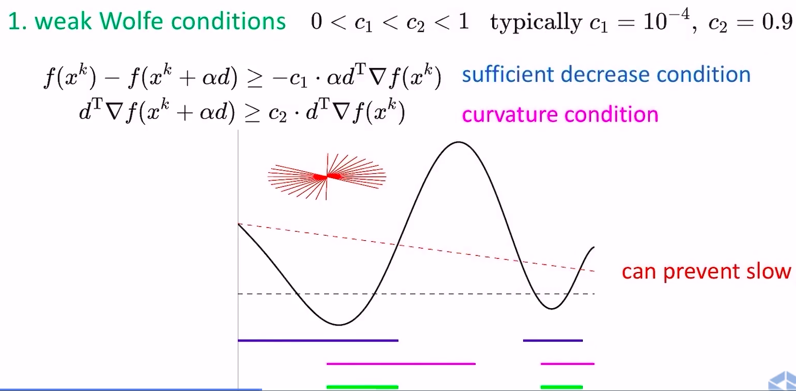
- sufficient decrease condition保证了函数值的下降
- curvature condition保证了这一步跨的足够大，从下山跨到上山
- strong wolfe conditions
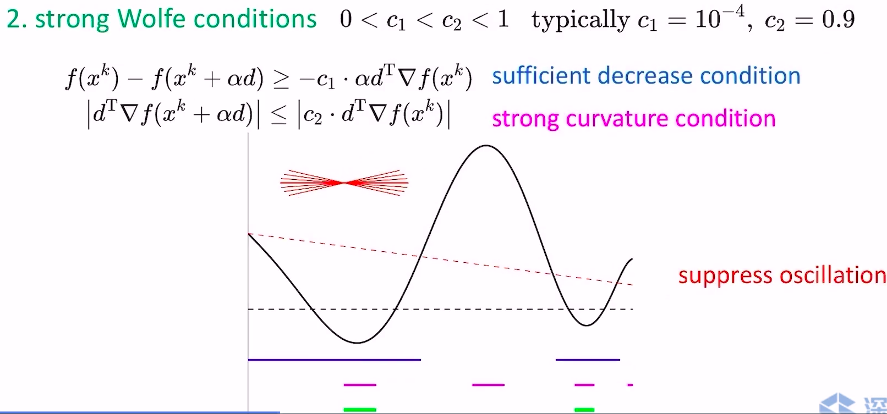
- strong和weak的区别在于对curvature condition加了个绝对值约束，不让这一步跨的太过头（跑到对面的山坡上），可以抑制震荡
- weak wolfe conditions
- 但Wolfe conditions只能保证方向是下降方向，如何保证BFGS的收敛性呢？答案是cautious update(Li and Fukushima 2001) with mild conditions
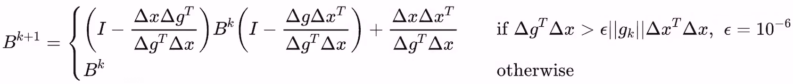
- 只要函数满足如下两个条件，cautious update都可以保证BFGS的收敛性
- 函数有bounded sub-level sets
- 函数有lipschitz continuous grad
- 适用于非凸但光滑函数的BFGS方法的流程
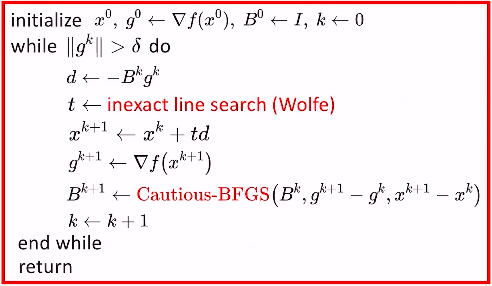
- 与牛顿方法的收敛速度对比
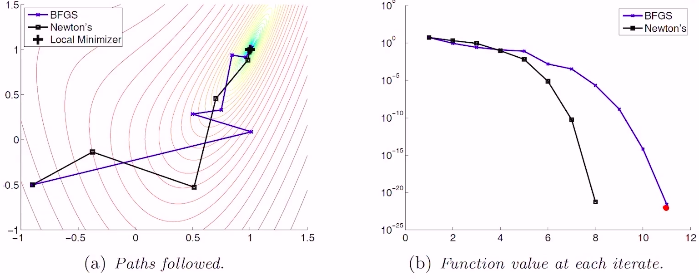
- 速度上慢了一点点，但计算量少很多，综合看更具优势
Limited-memory BFGS(L-BFGS)方法
- 由于\(B^{k+1}\)是由\(B^{k}\)迭代计算得到的。所以\(B^{k}\)隐含了\(B^{k-100}\)的信息。但直觉上来说，\(x^{k}\)和\(x^{k-100}\)已经差的很远了，\(x^{k-100}\)处的曲率信息对\(x^{k}\)处的曲率信息的推导没有啥有效价值了，因此我们可以设置一个memory buffer，让\(B^{k-m}\)到\(B^{k-1}\)来决定\(B^{k}\)的取值，从而降低计算量。
- L-BFGS方法的流程
- 就是把上面的Cautious-BFGS过程改成下面的\(B^{k}\)更新流程
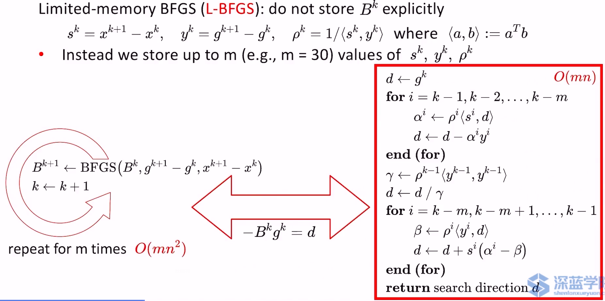
- 上图左边方法的复杂度是\(O(mn^{2})\)，因为每个window size内的信息都被重复遍历并计算了。实际上每个循环中，我们只需要将窗口中的头元素去掉，末尾的新元素算进来即可，因此改成右边的计算过程后可以将复杂度简化到\(O(mn)\)，具体推导可以看Liu and Nocedal 1989.
- 与Newton和BFGS的对比
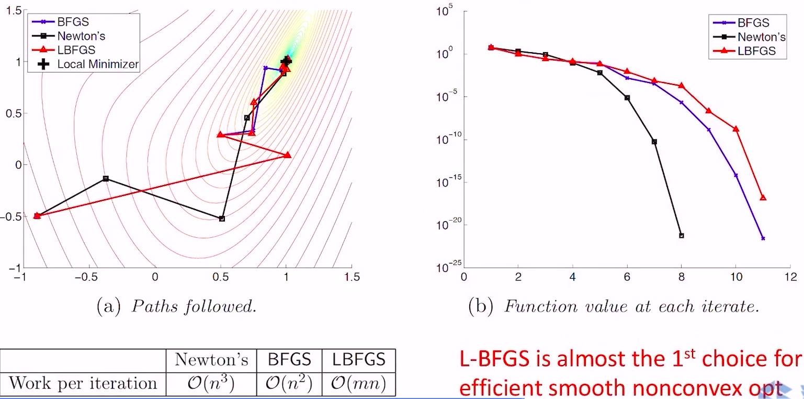
- 由于牺牲了部分历史信息，收敛速度相比BFGS更慢一些，但计算量从\(O(n^{2})\)降低到\(O(mn)\)，当\(n\)很大的时候，效率提升就非常大了，基本上是光滑非凸函数优化的第一选择
非凸且非光滑函数的L-BFGS方法
- wolfe conditions方法选择
- 假设我们把strong wolfe conditions方法直接应用在非凸且非光滑函数上，看看会发生什么
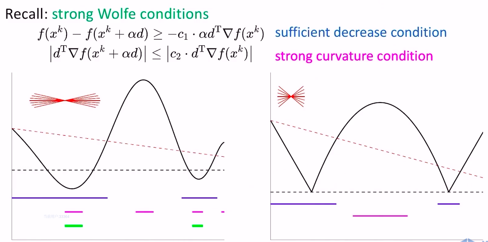
- 回顾一下，strong wolfe conditions通过绝对值约束，将更新点的梯度压在0附近，但上图右侧的非光滑函数没有任何点的梯度在0附近，导致无法找到满足strong wolfe conditions的点
- 假设我们把weak wolfe conditions方法直接应用在非凸且非光滑函数上，看看效果
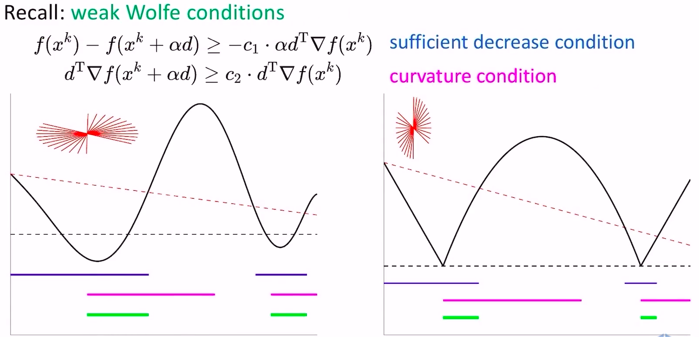
- weak wolfe conditions方法可以保证能找到满足条件的更新点
- 结论：使用weak wolfe conditions方法处理nonsmooth函数
- 假设我们把strong wolfe conditions方法直接应用在非凸且非光滑函数上，看看会发生什么
- 如何确定一个步长使得weak wolfe conditions被满足呢？
- 对smooth函数，用拟合法确定步长
- 先初始化一个步长\(\alpha\)
- 如果该步长满足weak wolfe conditions，直接返回
- 如果不满足weak wolfe conditions，根据\(\left ( x,{f}\ ‘(x) \right )\)和\(\left ( x+\alpha d,{f}\ ‘(x+\alpha d) \right )\)两个点去拟合二次函数，取二次函数的极值点作为新的步长，不断迭代，直到满足weak wolfe conditions
- 但是当函数nonsmooth（或者条件数很大）的时候，这种二次函数拟合的效果很差，导致求出来的极值点也很不理想，就不再适用了
- 对nonsmooth函数，用Lewis & Overton line search方法
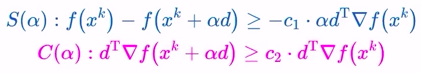
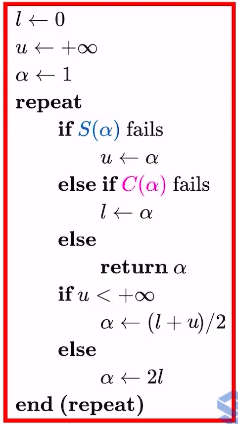
- 对smooth函数，用拟合法确定步长
- 注意点
- \(x_{0}\)一定要取在可导的点，不能一上来就落在nonsmooth处
- 非凸且非光滑函数的L-BFGS方法流程
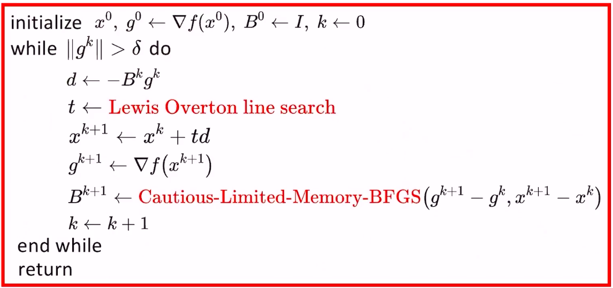